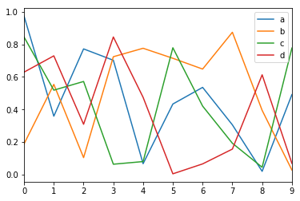
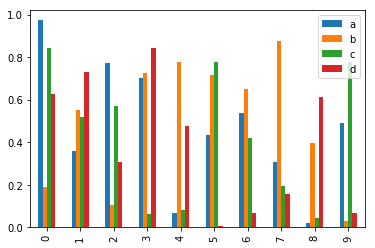
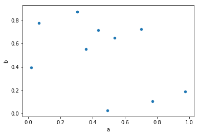

layout: true .top-line[] --- class: center, middle # Python - Pandas 허준영(jyheo@hansung.ac.kr) --- ## Contents * Pandas * Series * Data Frame * Panel Data * Descriptive Statistics * Function * Reindexing/Missing Data * GroupBy * Time Series * Plot * Load/Save Data * References --- ## Pandas * Pandas is an open source, BSD-licensed library for the Python programming language - providing high-performance, easy-to-use data structures and data analysis tools * Features - Tools for loading data - Data alignment and integrated handling of missing data. - Reshaping and pivoting of date sets. - Label-based slicing, indexing and subsetting of large data sets - Columns from a data structure can be deleted or inserted. - High performance merging and joining of data. - Time Series functionality. --- ## Pandas ### Pandas Object * Series - 1D, size-immutable array * Data Frame - 2D, tabular, size-mutable array - Most used data structure * Panel - 3D, size-mutalbe array ```python import pandas as pd import numpy as np ``` --- ## Series * pd.Series(array, index) ```python >>> pd.Series([1,3,5,np.nan,6,8]) 0 1.0 1 3.0 2 5.0 3 NaN 4 6.0 5 8.0 dtype: float64 >>> s = pd.Series([1, 2, 3], index=['a', 'b', 'c']) >>> print(s) a 1 b 2 c 3 dtype: int64 >>> s[0] 1 >>> s['a'] 1 >>> s.values # numpy array array([1, 2, 3]) ``` --- ## Data Frame * Data is aligned in a tabular in rows and columns * pd.DataFrame(data, index, columns, dtype, copy) ```python >>> pd.DataFrame(np.arange(3)) 0 0 0 1 1 2 2 >>> pd.DataFrame(np.arange(3), columns=['num']) num 0 0 1 1 2 2 >>> data = np.array([np.arange(3), ['a', 'b', 'c']]).T >>> data array([['0', 'a'], ['1', 'b'], ['2', 'c']], dtype='<U21') >>> pd.DataFrame(data, columns=['num', 'alpha']) num alpha 0 0 a 1 1 b 2 2 c ``` --- ## Data Frame * Create data frame with Dict ```python >>> data = {'num':[0, 1, 2], 'alpha':['a', 'b', 'c']} >>> pd.DataFrame(data) # by Dict alpha num 0 a 0 1 b 1 2 c 2 >>> data = [{'alpha':'a', 'num':0}, {'num':1, 'alpha':'b'}, {'num':2}] >>> pd.DataFrame(data) # by list of Dict alpha num 0 a 0 1 b 1 2 NaN 2 ``` --- ## Data Frame ### Column Selection ```python >>> data = {'num': [0, 1, 2], 'alpha':['a', 'b', 'c'], 'numf':[0., 1., 2.]} >>> df = pd.DataFrame(data) >>> df alpha num numf 0 a 0 0.0 1 b 1 1.0 2 c 2 2.0 >>> df['num'] # Column Selection 0 0 1 1 2 2 >>> df[['num', 'numf']] num numf 0 0 0.0 1 1 1.0 2 2 2.0 ``` --- ## Data Frame ### Column Addition and Deletion ```python >>> df alpha num numf 0 a 0 0.0 1 b 1 1.0 2 c 2 2.0 >>> df['new'] = pd.Series([10, 20, 30]) # Add a New Column >>> df alpha num numf new 0 a 0 0.0 10 1 b 1 1.0 20 2 c 2 2.0 30 >>> df['num'] + df['new'] # Addition (arithmetic) 0 10 1 21 2 32 dtype: int64 >>> del df['new'] # Delete a Column >>> df alpha num numf 0 a 0 0.0 1 b 1 1.0 2 c 2 2.0 ``` --- ## Data Frame ### Row Selection * df.loc(), df.iloc(), df[] ```python >>> data = {'num': [0, 1, 2], 'alpha':['a', 'b', 'c'], 'numf':[0., 1., 2.]} >>> index = ['ia', 'ib', 'ic'] >>> df = pd.DataFrame(data, index=index) >>> df alpha num numf ia a 0 0.0 ib b 1 1.0 ic c 2 2.0 >>> df.loc['ib'] # Row by index (row label) alpha b num 1 numf 1 Name: ib, dtype: object >>> df.iloc[1] # Row by integer alpha b num 1 numf 1 Name: ib, dtype: object >>> df[:2] # Row Selection alpha num numf ia a 0 0.0 ib b 1 1.0 ``` --- ## Data Frame ### Row Addition and Deletion * df.append(), df.drop() ```python >>> df2 = pd.DataFrame([{'alpha':'d', 'num':3}], index=['id']) >>> df2 alpha num id d 3 >>> df = df.append(df2) # returns a View with the DataFrame, df2 >>> df alpha num numf ia a 0 0.0 ib b 1 1.0 ic c 2 2.0 id d 3 NaN >>> df = df.drop('id') # returns a View without the Row >>> df alpha num numf ia a 0 0.0 ib b 1 1.0 ic c 2 2.0 >>> df.drop(['ia', 'ib']) # returns a View without the Rows alpha num numf ic c 2 2.0 >>> df # Guess the output ``` --- ## Panel Data * 3D container of a data * Panel Data are multi-dimensional data involving measurements over time * pandas.Panel(data, items, major_axis, minor_axis, dtype, copy) * 3 axes - items: axis 0, array of Data Frame - major_axis: axis 1, index(row) of Data Frame - minor_axis: axis 2, column of Data Frame --- ## Panel Data * pd.Panel(), p[], p.major_xs(), p.minor_xs() ```python >>> data = {'item1':pd.DataFrame([[1, 2, 3], [4, 5, 6]]), 'item2':pd.DataFrame([[7, 8, 9], [10, 11, 12]])} >>> p = pd.Panel(data) >>> p <class 'pandas.core.panel.Panel'> Dimensions: 2 (items) x 2 (major_axis) x 3 (minor_axis) Items axis: item1 to item2 Major_axis axis: 0 to 1 Minor_axis axis: 0 to 2 >>> p['item1'] 0 1 2 0 1 2 3 1 4 5 6 >>> p.major_xs(0) item1 item2 0 1 7 1 2 8 2 3 9 >>> p.minor_xs(0) item1 item2 0 1 7 1 4 10 ``` --- ## Descriptive Statistics * sum(), mean(), median(), mode(), std(), min(), max(), cumsum() ```python >>> data = {'num': [0, 1, 2], 'numf':[0., 1., 2.]} >>> df = pd.DataFrame(data, index=['a', 'b', 'c']) >>> df num numf a 0 0.0 b 1 1.0 c 2 2.0 >>> df.sum() num 3.0 numf 3.0 dtype: float64 >>> df.sum(axis=1) a 0.0 b 2.0 c 4.0 dtype: float64 >>> df.mean() num 1.0 numf 1.0 dtype: float64 >>> df.std() num 1.0 numf 1.0 dtype: float64 >>> df.describe() # try ! ``` --- ## Function * Row or Column Wise Function Application: apply() * Element wise Function Application: applymap() ```python >>> df = pd.DataFrame(np.arange(9).reshape((3,3)), columns=['c1', 'c2', 'c3']) >>> df c1 c2 c3 0 0 1 2 1 3 4 5 2 6 7 8 >>> df.apply(np.mean) c1 3.0 c2 4.0 c3 5.0 dtype: float64 >>> df.apply(np.mean, axis=1) 0 1.0 1 4.0 2 7.0 dtype: float64 >>> df.applymap(lambda x: x + 2) c1 c2 c3 0 2 3 4 1 5 6 7 2 8 9 10 ``` --- ## Reindexing/Missing Data ### Reindexing * df.reindex(index, columns), df.reindex_like(other_df) * df.dropna(), df.fillna() ```python >>> data = {'DATE':pd.date_range(start='2017-09-10', periods=5, freq='D'), ... 'NUM':np.arange(5), 'RAND':np.random.rand(5)} >>> df = pd.DataFrame(data) >>> df DATE NUM RAND 0 2017-09-10 0 0.492097 1 2017-09-11 1 0.274182 2 2017-09-12 2 0.471830 3 2017-09-13 3 0.841739 4 2017-09-14 4 0.848454 >>> df2 = df.reindex(index=[0, 2, 4], columns=['DATE', 'NUM', 'NAND']) >>> df2.loc[0:2, 'NAND'] = 1 >>> df2 DATE NUM NAND 0 2017-09-10 0 1.0 2 2017-09-12 2 1.0 4 2017-09-14 4 NaN ``` --- ## Reindexing/Missing Data ### Missing Data * df.dropna(), df.fillna() ```python >>> df2 DATE NUM NAND 0 2017-09-10 0 1.0 2 2017-09-12 2 1.0 4 2017-09-14 4 NaN >>> df2.dropna() DATE NUM NAND 0 2017-09-10 0 1.0 2 2017-09-12 2 1.0 >>> df2.fillna(5) DATE NUM NAND 0 2017-09-10 0 1.0 2 2017-09-12 2 1.0 4 2017-09-14 4 5.0 ``` --- ## GroupBy * df.groupby(keys) ```python >>> data = {'DATE':pd.date_range(start='2017-09-10', periods=10, freq='D'), ... 'NUM':np.arange(10), 'AB':np.random.choice(['A', 'B'], 10)} >>> df = pd.DataFrame(data) >>> df AB DATE NUM 0 A 2017-09-10 0 1 A 2017-09-11 1 2 A 2017-09-12 2 3 B 2017-09-13 3 4 A 2017-09-14 4 5 A 2017-09-15 5 6 B 2017-09-16 6 7 A 2017-09-17 7 8 A 2017-09-18 8 9 A 2017-09-19 9 >>> df.groupby('AB').groups {'A': Int64Index([0, 1, 2, 4, 5, 7, 8, 9], dtype='int64'), 'B': Int64Index([3, 6], dtype='int64')} >>> As = df.groupby('AB').groups['A'] >>> df.iloc[As] AB DATE NUM 0 A 2017-09-10 0 1 A 2017-09-11 1 2 A 2017-09-12 2 4 A 2017-09-14 4 5 A 2017-09-15 5 7 A 2017-09-17 7 8 A 2017-09-18 8 9 A 2017-09-19 9 ``` --- ## GroupBy * Aggregation: groupby.agg() ```python >>> df.groupby('AB')['NUM'].agg([np.sum, np.mean, np.std]) sum mean std AB A 36 4.5 3.338092 B 9 4.5 2.121320 ``` * Filteration: groupby.filter() ```python >>> df.groupby('AB').filter(lambda x: len(x) >= 3) AB DATE NUM 0 A 2017-09-10 0 1 A 2017-09-11 1 2 A 2017-09-12 2 4 A 2017-09-14 4 5 A 2017-09-15 5 7 A 2017-09-17 7 8 A 2017-09-18 8 9 A 2017-09-19 9 ``` --- ## Time Series * Resampling, Converting Time Zone, etc. * Converting secondly data into 5-minutely data ```python >>> rng = pd.date_range('1/1/2012', periods=100, freq='S') >>> ts = pd.Series(np.random.randint(0, 500, len(rng)), index=rng) >>> ts.head(5) 2012-01-01 00:00:00 2 2012-01-01 00:00:01 7 2012-01-01 00:00:02 425 2012-01-01 00:00:03 91 2012-01-01 00:00:04 399 Freq: S, dtype: int64 >>> ts.resample('5Min').sum() 2012-01-01 23403 Freq: 5T, dtype: int64 >>> ts.resample('5Min').mean() 2012-01-01 234.03 Freq: 5T, dtype: float64 ``` --- ## Plot * df.plot(), df.plot.bar(), df.plot().hist(), df.plot.scatter(), etc. ```python # IPython df = pd.DataFrame(np.random.rand(10,4),columns=['a','b','c','d']) df.plot() plt.show() df.plot.bar() plt.show() df.plot.scatter(x='a', y='b') plt.show() ```    --- ## Load/Save Data * df.to_csv(file), pd.read_csv(file) * df.to_html(), df.to_json(), df.to_latex() * HDF5(PyTables), excel, SQL, and so on ```python >>> data = {'DATE':pd.date_range(start='2017-09-10', periods=10, freq='D'), ... 'NUM':np.arange(10), 'RAND':np.random.rand(10)} >>> df = pd.DataFrame(data) >>> df.to_csv('test.csv') >>> df2 = pd.read_csv('test.csv') >>> df2 Unnamed: 0 DATE NUM RAND 0 0 2017-09-10 0 0.987299 1 1 2017-09-11 1 0.940111 2 2 2017-09-12 2 0.007097 3 3 2017-09-13 3 0.451697 4 4 2017-09-14 4 0.556601 5 5 2017-09-15 5 0.159942 6 6 2017-09-16 6 0.590766 7 7 2017-09-17 7 0.477709 8 8 2017-09-18 8 0.614272 9 9 2017-09-19 9 0.331641 ``` .footnote[https://pandas.pydata.org/pandas-docs/stable/io.html] --- ## References * https://pandas.pydata.org/pandas-docs/stable/10min.html * https://www.tutorialspoint.com/python_pandas/ * https://pythonprogramming.net/data-analysis-python-pandas-tutorial-introduction/ * https://github.com/jvns/pandas-cookbook * https://bitbucket.org/hrojas/learn-pandas